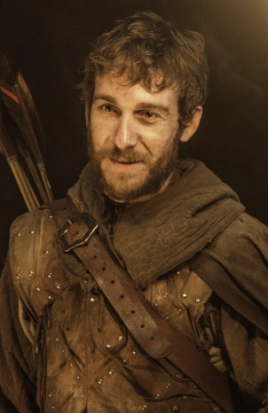

El Camino Real fue construido durante el reinado del rey Jaehaerys el Conciliador para unir Desembarco del Rey con El Norte.
Hermandad Sin Estandartes
Lema: Señor de la Luz, vela por nosotros
Ubicación: Camino Real

La Hermandad sin Estandartes, también conocida como los Caballeros de la Colina Hueca y la Comunidad Olvidada, es una cofradía de bandidos que pelean contra el gobierno Lannister en nombre del fallecido rey Robert I.

Beric Dondarrion: Apodado el Señor del Relámpago, fue cabeza de la Casa Dondarrion y Señor de Refugio Negro. Se convirtió en líder de la Hermandad sin Estandartes luego de ser enviado a las Tierras de los Ríos con el objetivo de llevar ante la justicia a Ser Gregor Clegane. Es Resucitado casi una decena de veces, pero el líder de la Hermandad sin Estandartes sacrifica su vida para salvar a Arya
Thoros: Mejor conocido como Thoros de Myr, es un sacerdote rojo de R'hllor originario de la Ciudad Libre de Myr. Es uno de los miembros fundadores de la Hermandad sin Estandartes. Thoros fue atacado por un oso polar zombie que le dejó agonizando en la nieve, donde murió congelado.

Anguy: Apodado Anguy el Arquero, es miembro de la Hermandad sin Estandartes. Es originario de las Marcas de Dorne. Es altamente valorado dentro del grupo de forajidos debido a su excepcional habilidad con el arco
Gendry: Es uno de los hijos bastardos del rey Robert Baratheon, nacido de la empleada de una taberna. Tras unirse a la Hermandad sin Estandartes es ungido caballero por Lord Beric Dondarrion con el nombre de Ser Gendry de la Colina Hueca.

Pastel Caliente, es un niño huérfano de Desembarco del Rey, recogido por Yoren y con destino al Muro en la misma expedición en la que iría en principio con Arya Stark. Es capturado junto con Arya y Gendry por la Hermandad sin Estandartes y llevados a la Posada del Hombre Arrodillado. Decide quedarse en la posada y hacer el pan.

Edric Dayne estuvo en el Torneo de la Mano en Desembarco del Rey como escudero de Beric Dondarrion, fue parte de las fuerzas enviadas por la Mano del Rey Eddard Stark a las Tierras de los Ríos para capturar a Ser Gregor Clegane.